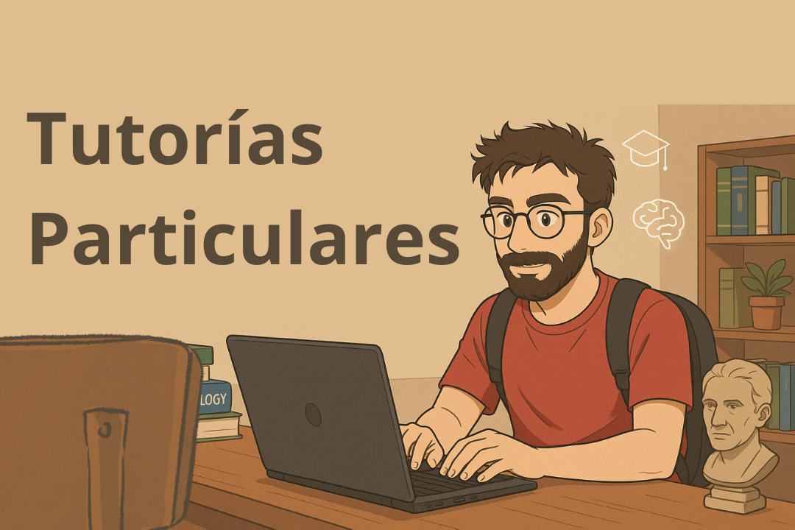
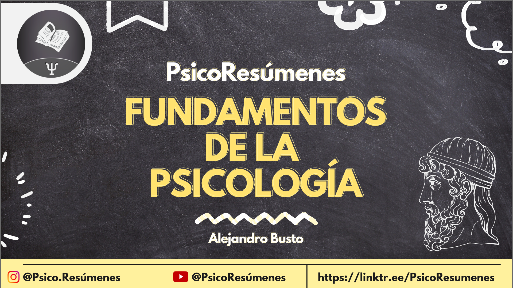
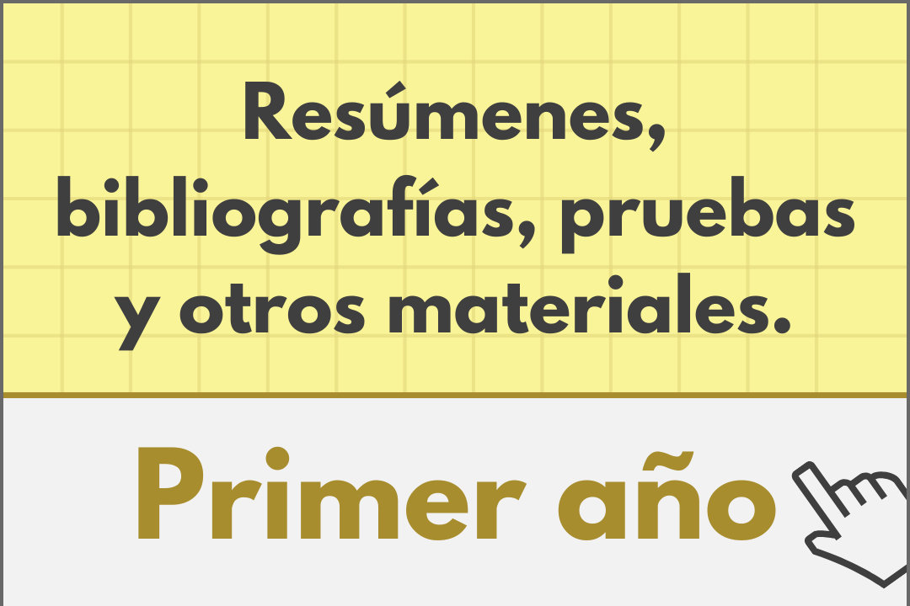

Resúmenes de Fundamentos de la PsicologíaFacultad de Psicología, UdelaR
|
Resúmenes de Fundamentos de la PsicologíaFacultad de Psicología, UdelaR
|
Resúmenes de Fundamentos de la PsicologíaResumen del texto "Santamaría, C. (2002). Historia de la Psicología. El nacimiento de una ciencia."2/20/2025 ÍndiceCapítulo 1. Antecedentes filosóficos de la psicología contemporánea Capítulo 2. El contexto biológico y neurológico Capítulo 3. El surgimiento de la psicología científica Capítulo 4. Funcionalismo y estructuralismo Capítulo 5. La medida de las capacidades humanas Historia de la Psicología. El nacimiento de una cienciaEl innatismo está en la esencia del racionalismo y el ambientalismo en la del empirismo. Si no somos capaces de adquirir el conocimiento por aprendizaje asociativo, hemos debido nacer con él en alguna medida. Aunque también existe una tercera posibilidad, y es la hipótesis constructivista de Kant, la cual dice que nacemos con las suficientes habilidades para obtener conocimiento del mundo exterior. Platón es el referente del racionalismo. Aristoteles es el referente del empirismo. Para Aristoteles la asociación gobierna la memoria, mientras que otras aptitudes como el razonamiento dependen de capacidades innatas. Aristoteles propone dos procedimientos para establecer asociaciones en la memoria:
Descartes concluyó que el proceso de analizar la realidad hasta sus constituyentes más elementales nos llevaría a topar con verdades inmediatamente evidentes para nuestro espíritu. Estas verdades son las naturalezas simples. Estas últimas son las que hacen posible al conocimiento. Descartes prescinde de los criterios de autoridad y tradición para la búsqueda del saber, y busca una proposición esencial e irrefutable en la que fundar todo el edificio del saber. Locke atacó el innatismo por considerar que ningún argumento puede probar que exista un solo principio innato en el conocimiento humano. Todas las ideas que tenemos se basan en dos procesos: sensación y reflexión. Locke tomó de Galileo la idea de que en la materia se pueden identificar dos tipos de cualidades:
Locke aplicó su empirismo a la educación, con ideas que luego se plasmaron en el conductismo. Berkeley era un empirista radical, rechaza el papel de la reflexión y argumenta que la sensación es la fuente de todo conocimiento. Su aporte más relevante a la psicología fue la teoría de la visión. Se opone a las cualidades primarias de la materia y decía que todas las propiedades de la materia dependían del observador. Según Hume, de la inducción no se puede obtener nunca conocimiento fiable. John Stuart Mill trató de devolverle al empirismo la confianza que Hume le había arrebatado. Busco la forma de extraer la causalidad a partir de la experiencia, postulando cinco métodos para establecer empíricamente causa-efecto.
Estos métodos no superan el problema de la inducción, no sirven para convertir las inducciones en deducciones, nadie ha conseguido nunca tal cosa. Pero estos métodos siguen usándose en la investigación científica. La obra de Mill ejerció gran influencia en la fundación de la psicología científica por parte de Wundt. Gottfried Wilhelm Leibniz, basó sus razonamientos acerca del conocimiento en dos argumentos lógicos:
Tiene la postura del paralelismo psicofísico, que dice que la mente y el mundo físico no estan conectados, pero estan sincronizados, de manera que ambos se sincronizan sin influir uno sobre el otro. Por eso percibimos el mundo con nuestra mente, a pesar de que la mente es impermeable al mundo. Kant es importante para la psicología por su teoría constructivista de la percepción. Para Kant, todo conocimiento comienza con la experiencia, pero no todo procede de la experiencia. La experiencia por si sola no puede otorgar necesidad y universalidad a las proposiciones. Según Kant, el mundo exterior solamente nos proporciona sensaciones que han de ser ordenadas en nuestro pensamiento de acuerdo a nociones como espacio, tiempo, causa y efecto, etc. El problema mente cuerpo Platón es el antecedente de la respuesta más frecuente a esta pregunta, pero es Descartes quien más claramente expuso esta postura, conocida como dualismo. Descartes consideró que los cambios en el exterior afectan a nuestras terminaciones nerviosas, lo que las desplaza de su ubicación en el cerebro. Estas reordenaciones se producen por cambios en el flujo de los espíritus animales que se mueven por el sistema nervioso transportando información. Esta idea es un precedente de la teoría del acto reflejo. Epifenómenos Los estados mentales son epifenómenos que emergen de las propiedades físicas del SN, pero que son incapaces de producir por sí mismos actividad cerebral alguna. Los fenómenos mentales pueden tener causas físicas, pero los fenómenos físicos no pueden tener causas mentales. A diferencia del materialismo, el epifenomenalismo reconoce la existencia de mente y cuerpo como entidades distintas, puesto que reconoce alguna relación causal entre ellas, y dos cosas que se influyen han de existir. Monismo del doble aspecto o monismo neutral Los procesos físicos y mentales son solo distintos aspectos de la misma serie de eventos psicofísicos. Desde el punto de vista subjetivo, el de la persona que la experimenta, la serie psicofísica tiene la apariencia de un estado mental. Desde un punto de vista objetivo, la misma serie pertenecería al mundo físico. Si queremos explicar a otra persona cualquier experiencia psicológica, como percibir un objeto, no se puede utilizar exclusivamente términos de la luz o de la mecánica del SN, sino que serán imprescindibles los términos mentales. Teoria del tejido mental Considera que las propiedades complejas de la mente, como el juicio, el deseo o el razonamiento, estan compuestas de elementos simples, cada uno de los cuales no manifiestan esas propiedades. Sin embargo, la combinación de todos estos elementos produce mecanismos tan complejos como la conciencia. La conciencia es un compuesto de elementos mentales (tejido mental) que por sí mismos no poseen esta propiedad. El contexto biológico y neurológicoLa psicología tuvo que esperar hasta que la biología humana diese sus primeros pasos, y fue a consecuencia de la teoría darwiniana que el interés por los problemas psicológicos surgió. A partir de la teoría darwiniana, el hombre pasa a formar parte de la naturaleza, y el estudio científico de la especie se convierte en un propósito razonable. Otra contribución de Darwin a la psicología es su estudio sobre la expresión de las emociones en el ser humano y los animales, donde aplica la teoría evolucionista al desarrollo de la expresividad emocional, explicando, por ejemplo, el erizamiento del vello de las personas en situaciones de terror como una reminiscencia de su pasado animal. Decía que los niños y las personas con trastornos mentales expresaban sus emociones de forma más acorde con la determinación biológica, mientras que los adultos tendían a disfrazarlas por efectos culturales. Aunque el aporte de Darwin a la psicología es notable, fue Spencer el primero en desarrollar una aplicación sistemática del concepto de evolución a la psicología. Sin embargo, su aplicación fue más bien lamarckiana que darwinista. El estudio de los impulsos nerviosos El estudio de los impulsos nerviosos fue uno de los primeros pasos en el desarrollo de la psicología y fisiología, de forma de fundar las disciplinas dentro del marco de las ciencias naturales. Robert Whytt desarrolló el primer trabajo riguroso sobre la fisiología de los reflejos involuntarios en ranas, lo cual dio como resultado la distinción entre acciones voluntarias y acciones involuntarias. Las acciones voluntarias dependeran del cerebro y las involuntarias de la médula espinal. Otros aportes de Whytt son:
Otro de los avances iniciales sobre la transmisión de impulsos nerviosos es la “Ley de Bell-Magendie”, la cual dice que las raíces posteriores de la médula espinal controlan la sensación, y las raíces anteriores controlan las respuestas motoras. Está ley, establece que la función sensitiva se diferencia estructuralmente de la función motora en el SN. Luis Galvani realizó experimentos eléctricos en ranas, consiguiendo medir la electricidad animal, aporte imprescindible para el desarrollo del estudio del SN por Helmholtz más adelante, entre otros. Helmholtz era materialista, defendió que la mente humana puede estudiarse a partir de las propiedades físicas del cuerpo y no por la existencia de algún tipo de fuerza vital de origen desconocido. Fue uno de los primeros estudiosos del impulso nervioso, y ya conociendo las propiedades eléctricas de estos, decidió que quizá sería posible medirlo. La medición del impulso nervioso supone un importante apoyo para el materialismo. Establece la velocidad en 30 metros por segundo para los nervios motores La velocidad de los impulsos sensoriales es 2 o 3 veces mayor que la motora Hizo también aportes relevantes en el campo de la percepción. Inventó el oftalmoscopio, que permite examinar directamente la retina, y desarrolló la teoría tricromática de la percepción del color. Desarrollé también una teoría sobre visión binocular que permitía explicar con exactitud cómo hacemos para calcular las distancias de los objetos. En cuanto a la percepción auditiva, Helmhotz presentó la teoría de la resonancia, que explica como distintos receptores de la membrana basilar de la cóclea estaban especializados en la detección de diferentes frecuencias sonoras. Localización de las funciones cerebrales El primer estudio sistemático de las funciones de las distintas áreas cerebrales, y también el más pintoresco, es el realizado por Joseph Gall. Gall hizo interesantes aportaciones a la fisiología y a la psicología y es el fundador del movimiento pseudocientífico “Frenología”. Desarrolló la idea de la función contralateral: cada lado del cerebro controla el lado contrario del cuerpo. Identificó las conexiones entre los dos hemisferios cerebrales y demostró que las circunvoluciones cerebrales son peculiares de cada especie, pero iguales en todos sus ejemplares, lo que hizo ver que probablemente respondian a distintas funciones. Frenología Se basa en dos proposiciones evidentes, una ambigua y dos falsas, en este orden:
Uno de los críticos más duros contra la Frenología es Pierre Flourens. Flourens aplicaba el método experimental en la investigación del cerebro. Fue una figura clave en el desarrollo del método de ablación consistente en extirpar ciertas partes del cerebro y observar los resultados. El método de ablación tiene dos restricciones importantes:
Los hallazgos de Flourens son más bien referidos a zonas extensas del cerebro. Uno de sus hallazgos es la demostración de que el cerebelo estaba relacionado con la coordinación motora. Una alternativa para el estudio de las funciones cerebrales es el método clínico, que consiste en analizar después de la muerte el cerebro de los pacientes que tenían deficiencias claramente identificadas. El más relevante trabajo usando este método es el de Paul Broca. Su investigación en el lóbulo frontal izquierdo, lugar donde ahora se encuentra el “Área de Broca”, renovó el interés por la localización cerebral, después de que la frenología hubiese desacreditado esa línea de investigación. Carl Wernicke estudió el déficit conocido como afasia sensorial, mientras que el déficit que estudió Broca es el llamado afasia motora. El área que estudió Wernicke es el lóbulo temporal izquierdo, detrás del área de Broca. Está área es llamada “Área de Wernicke”. Otro método desarrollado a finales del siglo XIX es la estimulación eléctrica de la corteza cerebral. Fritsch y Hitzig encontraron que una ligera estimulación eléctrica de la corteza cerebral producia movimientos de distintos músculos. Fundadores de la neurología moderna Desde mediados del siglo XIX el estudio del cerebro experimentó un notable desarrollo. Por ejemplo, Gratiolet pudo determinar la conexión del nervio óptico con la parte posterior del cerebro. El mayor desarrollo se produjo a partir del conocimiento de la estructura del tejido cerebral que fue posible gracias a lo que se conoce como teoría de la neurona. Santiago Ramon y Cajal utilizó el método de tintura de los tejidos desarrollado por Golgi. Ramón y Cajal demostró que el tejido cerebral está formado por células independientes, también demostró que estas neuronas no estan conectadas fisicamente y que el flujo de la información es un unidireccional en todo el sistema nervioso. Está teoría fue confirmada con la invencion del microscopio electronico. Otro de sus hallazgos, particularmente importante para la psicología, es que el tejido nervioso de los vertebrados más complejos se caracteriza por un mayor número de conexiones neuronales. Lo que llevó a pensar que la conectividad es más importante para explicar la inteligencia que el número total de neuronas, y encontró indicios de que el aprendizaje afecta a las conexiones neuronales. Charles Sherrington desarrolló una teoría sobre cómo es posible que las neuronas desconectadas que había descubierto Ramon y Cajal se intercambiasen información. Sherrington propuso que entre las neuronas hay un espacio que denominó sinapsis en el que se producía dicho intercambio. También investigo los actos reflejos y confirmó con mejor tecnología los descubrimientos de Whytt. Descubrió además que la corteza cerebral inhibía los reflejos producidos por la médula espinal, de forma que dichos reflejos eran más patentes en animales en los que la médula se había desconectado del cerebro. Conclusiones Lo que hicieron las investigaciones anteriores fue traer los fenómenos mentales al mundo de la realidad y posibilitar su investigación científica. La psicología actual no sería posible sin una concepción un tanto materialista de la mente humana. El surgimiento de la psicología científica Kant y Comte negaron la posibilidad de que la psicología pueda ser estudiada científicamente. Sin embargo, Comte nunca se opuso a la posibilidad de que las observaciones positivas fuesen explicadas con teorías que apelasen a entidades inobservables. Comte ordenaba las ciencias desde las más elementales a las más complejas. El mapa del conocimiento científico propuesto por el fue el siguiente:
Cada una de estas ciencias debía tener en cuenta los principios de las anteriores. En este sentido, la matemática constituia la única ciencia autónoma. Entre los aspectos de la psicología que le parecieron a Comte más rigurosos está el trabajo de la frenología, lo que no dice mucho a favor de sus conocimientos metodológicos. La crítica de Comte a la introspección era compartida por muchos psicólogos del siglo XX. Stuart Mill consideraba que el método inductivo riguroso puede dotar de carácter científico a la investigación psicológica. Las dos disciplinas de la psicología científica Cronbach en 1957 y 1975 identificó dos perspectivas metodológicas que podian determinar dos grupos claramente diferenciados de psicólogos:
Incluso hoy todavía se puede hacer esta diferencia y dividir con este mismo criterio las áreas de conocimiento que forman la psicología. El hecho de que en psicología sean posible estos dos métodos de investigación, que son los que definen a las ciencias empíricas, hacen que en cuanto a la metodología empleada, la psicología mantenga una posición firme entre las ciencias empíricas. El nacimiento de la psicología científica Es habitual considerar a Wundt como el fundador de la psicología científica, sin embargo hay que enmarcar algunos trabajos anteriores que son también relevantes, concretamente, las primeras investigaciones en psicofísica. Los fundadores de la psicofísica Weber estaba interesado en el estudio de la fisiología de los órganos sensoriales. Hizo investigaciones experimentales para descubrir el umbral a partir del cual percibimos varios tipos de fenómenos, o hasta qué punto somos capaces de diferenciar entre fenómenos de intensidad semejante. Planteó lo que podría considerarse la primera ley matemática en psicología, al establecer la mínima diferencia perceptible entre dos pesos. Su aporte más relevante fue el haber descubierto que la experiencia subjetiva podía examinarse experimentalmente y describirse con números, lo que abría el camino a la ciencia psicológica. Fechner advirtió que las sensaciones que tenemos del mundo no son siempre proporcionales a las características de este, en este sentido, el nivel de sensación que tenemos de un estímulo no está determinado exclusivamente por la magnitud del estímulo. Pensó que sería posible establecer una relación matemática entre el mundo físico y el mundo de la sensación. En esta labor, advirtió que la dificultad se encontraba en la medición de las sensaciones más que en la cuantificación de las propiedades físicas del mundo exterior. Utilizo 3 métodos para determinar la magnitud de las sensaciones: El método de estímulos constantes: consiste en medir la diferencia requerida entre dos estímulos para obtener un alto porcentaje de aciertos en juicios comparativos sobre las propiedades físicas de los estímulos. El método de ajuste: los sujetos han de ajustar un estímulo variable hasta que lo perciban igual a otro estímulo constante. El método de los límites: sirve para determinar el umbral diferencial en la comparación de un estímulo con otro que sirve de modelo. Weber y Fechner ocupan un lugar relevante en la historia de la psicología por sus aportes metodológicos a toda la psicología experimental. La inauguración de la psicología experimental académica Wundt es un personaje relevante en la historia de la psicología por:
Desarrollo, junto a Helmholtz, estudios experimentales sobre sensación y percepción, así como otros trabajos que incluyen prácticamente todos los campos de la psicología, desde aprendizaje hasta psicología antropológica o forense. Realizo trabajos rigurosos sobre la percepción de las propiedades físicas de los objetos y se decidió a estudiar la experiencia inmediata (aquella que recibe el sujeto directamente del mundo exterior sin mediación de aparatos o elaboración mental alguna) Para el estudio de la experiencia inmediata desarrolló una técnica de introspección que denominó percepción interna, y que no tenía nada que ver con el análisis desorganizado de la observación. La percepción interna consistia en la producción de respuestas inmediatas a estímulos cuidadosamente controlados. Consideraba que los datos de la percepción interna sólo pueden considerarse fiables si son reproducidos varias veces. Por primera vez en la historia de la psicología, un investigador decide introducir trabas sobre el tipo de fenómenos que pueden ser estudiados y la forma de hacerlo. Esta característica es un claro síntoma de la decisión de Wundt por colocar a la psicología dentro del panorama de las ciencias empíricas. La mayor parte de sus estudios se centraron en la sensacion y percepcion. Planteó estudios de cronometría mental basados en las investigaciones de Helmholtz sobre la transmisión del impulso nervioso. Intentaba determinar cuál era la velocidad de los procesos mentales. Wundt consideraba como un aspecto fundamental del funcionamiento de la mente humana la capacidad de la voluntad para organizar los contenidos mentales en estructuras de nivel superior, de forma que las imágenes surgidas de la percepción se reorganizan en procesos cognitivos superiores. Se refirió a este sistema como “voluntarismo”. En esto se diferencia la concepción wundtiana de planteamientos puramente asociacionistas, y del estructuralismo empirista. Para Wundt la psicología debía ocuparse de identificar los elementos que constituyen la conciencia: esos elementos que la voluntad se encarga de organizar pero que pueden aislarse para su estudio. Wundt identificó algunos de estos elementos y los dividió en dos clases:
Son las réplicas cerebrales de los estímulos externos que han estimulado el SN, o sea, son imágenes análogas al mundo exterior. Mediante la percepción interna y la experimentación pueden investigarse conforme a tres parámetros:
Sentimientos Se pueden situar en tres dimensiones que actúan como 3 ejes, de modo que cada sentimiento puede describirse con precisión haciendo referencia a su valor en cada una de estas 3 dimensiones:
La nueva psicología científica debía cubrir 3 objetivos:
El proceso por el que se produce la organización de los elementos de la conciencia para dar lugar a los procesos complejos se llama apercepción. Wundt no consideraba posible utilizar el método experimental en sus trabajos en el aprendizaje, pensamiento, lenguaje o el efecto de la cultura, pero consideraba a estos temas igual de relevantes. Si bien se considera por muchos autores a Wundt como estructuralista, no fue tal cosa. El estudio experimental de la memoria Ebbinghaus se interesó en los procesos de asociación de ideas. Se dedicó al análisis del recuerdo y del olvido tal como se producían en su propia mente después del estudio de listas de sílabas sin sentido. La utilización de sílabas sin sentido se basa en que estas evitan la interferencia del conocimiento previo del sujeto, de forma que se puede tener seguridad que se está midiendo el aprendizaje que ha producido la sesión experimental y no otros conocimientos que el sujeto pueda tener. Entre sus descubrimientos se encuentran:
La contribución de él fue relevante por haber extendido el uso del método experimental al estudio de la memoria. En esto se opuso a la concepción de Wundt de que los procesos superiores no son abordables experimentalmente. La escuela de Wurzburgo Külpe se formó en el laboratorio de Wundt, y al trasladarse a la universidad de Wurzburgo puso en marcha un laboratorio que rivalizaria en importancia. En este laboratorio se comenzó a estudiar el pensamiento. Para esto Külpe modifico la técnica introspectiva y empezó a utilizar informes a posteriori que realizaban los sujetos sobre sus pensamientos. El método se llamó introspección experimental sistemática. Este método tenía ciertos problemas por las distorsiones que podía introducir la memoria, y para evitarlos, se utilizaba un procedimiento mediante el cual la tarea se fraccionaba en todos sus componentes. El sujeto debía informar sobre lo que había pensado mientras preparaba la tarea, mientras aparecía el estímulo, etc. Una experiencia de 10 segundos podía tardar 10 minutos en ser descrita. El aporte más importante de esta escuela fue la idea de que el pensamiento puede producirse sin reproducir la experiencia sensorial: el pensamiento sin imágenes, creencia que se mantenía vigente desde Aristoteles hasta ese momento. La discusión que se derivó de este asunto tuvo como consecuencia el descreditó del método introspectivo, puesto que cada uno de los autores desdeñaba los datos del otro para estimar que no había realizado adecuadamente la introspección. Conclusiones Se podría considerar la paternidad de la psicología compartida entre los psicofísicos y Wundt. Así como otros investigadores tales como Ebbinghaus. Todos los investigadores anteriores se dedicaron más bien al trabajo experimental, y la investigación correlacional tiene como indiscutible precedente a Francis Galton. Hubo dos formas de eludir las restricciones de Wundt sobre el estudio de los procesos superiores:
La polémica entre Wundt y la escuela de Wurzburgo sobre el pensamiento sin imágenes puede compararse con la polémica entre el racionalismo y el empirismo. Para el racionalismo podemos representar la realidad sin la necesidad de representaciones de ella (pensamiento sin imágenes), para el empirismo la mente es una mera copia del mundo exterior (pensamiento con imágenes). Funcionalismo y estructuralismoTanto el funcionalismo como el estructuralismo tienen sus raíces en la cultura europea, pero desarrollaron el pensamiento psicológico en USA particularmente. El funcionalismo principalmente, ya que USA se estaba más interesado en saber para qué podía servir cualquier cosa, incluida la mente, que en determinar su estructura. El nacimiento del funcionalismo Nació como una versión filosófica y socio-cultural de la teoría de la selección natural de Darwin y fue introducido en USA por Spencer. El punto de vista de Spencer se ha denominado Darwinismo social. El pragmatismo de William James James puede considerarse un precedente del funcionalismo y una figura importante en la fundación de la psicología. Junto con Pearce y Dewey fue una de las tres grandes figuras del pragmatismo (o utilitarismo). Un punto de vista que consideraba que la verdad no existe en su sentido clásico, de forma que podríamos considerar que una proposición es verdadera cuando resulta útil creer que lo es. Su filosofía no es solo no racionalista, es incluso, irracionalista. Su importancia para la psicología deriva de haber escrito una de las obras clásicas de los primeros años de la disciplina, en la cual aborda una gran cantidad de asuntos desde una perspectiva ecléctica, además era un defensor de la introspección. Spencer definía en sus “Principios de psicología” que las propiedades de la conciencia eran como un flujo continuo más que una propiedad estática. Decía que la conciencia no puede descomponerse en unidades más simples sin desvirtuarse, de modo que para estudiarla era preferible pensar en cuál pueda ser su utilidad en vez de indagar en su estructura. Defiende que todo está formado de una sola materia, de forma que no tiene sentido establecer una distinción entre mente y materia. Su postura al problema de mente-cuerpo es enmarcada en el monismo neutral. En su teoría sobre los hábitos los considera procedimientos de valor adaptativo. Sobre las emociones adoptó una postura radicalmente pragmática, defiende que nuestras emociones se forman a partir de correlatos fisiológicos. Es decir, no nos ponemos nerviosos a razón de que nos palpita el corazón, sino que nos palpita el corazón y eso hace que nos pongamos nerviosos. También supone que cada emoción tiene asociadas reacciones fisiológicas exclusivas. La institucionalización de la psicología La psicología americana necesitaba un organizador y lo encontró en la figura de Stanley Hall. Hall se dedicó esencialmente a lo que hoy llamaríamos psicología evolutiva y que él denominó psicología genética. Defendia la teoría de recapitulación biológica, que consiste en la idea de que el desarrollo del ser humano reproduce la historia filogenética de la especie. En este sentido, Hall consideraba que los juegos infantiles reflejan los estadios anteriores de la evolución de nuestra especie. Su investigación se basó en el uso masivo de cuestionarios. Fue el primer psicólogo en ocuparse de la adolescencia como una etapa crucial del desarrollo. Y fue a su vez, pionero en el estudio de la vejez. El estructuralismo americano Titchener definía por 1898 los postulados de la psicología estructuralista. Establece un paralelismo entre la medicina y la psicología, e indica que el estructuralismo es equivalente al estudio de la anatomía. Titchner dice que el funcionalismo analiza el uso de los órganos, y por lo tanto antes es necesario conocer la estructura para luego estudiar sus funciones. Para Titchener la mente era el objeto que los psicólogos debian tratar de conocer. Sin embargo, el conocimiento de la mente sólo es posible a través de la conciencia. En respuesta a James, que decía que la conciencia no podía estudiarse por ser una actividad continua, Titchener dice que muchos objetos en la naturaleza se comportan así, pero que puestos en las condiciones oportunas se comportan de forma predecible. La psicología de Titchener tenía como objeto de estudio la mente general del adulto. No consideraba importante el estudio de las diferencias entre distintas personas, ni la comparación de la mente humana con la animal, ni en el estudio de personas con deficiencias o desviaciones de personalidad. Estableció que los elementos de la conciencia eran 3:
Para Titchener, la introspección presentaba dificultades para estudiar las afecciones, ya que la observación de estas las altera automáticamente, por eso, proponia atender las sensaciones que producen a esas afecciones en vez de a estas últimas directamente. Esto mismo pasa con cualquier experiencia consciente, y por eso proponia informar de los procesos que ocurren de forma a posteriori utilizando los recuerdos. La diferencia con Wundt es que el punto de vista de Titchener era el de un genuino empirista, mientras que Wundt incluía en su sistema elementos racionalistas (como la voluntad). La victoria del funcionalismo A diferencia del estructuralismo, la escuela funcionalista tenía muy en cuenta las posibles aplicaciones prácticas de su investigación. John Dewew influyó en psicología por su investigación de los reflejos y por sus ideas sobre la educación. En el campo de la educación, defendió lo que se conoce como educación progresista. Rechazó el énfasis en la disciplina y en el aprendizaje repetitivo y acuñó la idea de que los niños aprenden interactuando con el entorno, lo que lo convierte junto con Hall en un defensor del aprendizaje manipulativo. James Angell sostenía que la mente es un dispositivo de adaptación que sirve para que los seres humanos puedan sobrevivir al entorno. Metodológicamente propuso que el comportamiento podía estudiarse mediante la observación directa (sin introspección). Esta idea influyó mucho a John Watson que luego fundó el conductismo. Conclusiones La filosofía pragmatista americana tuvo como consecuencia el nacimiento de una psicología empírica. El estructuralismo de Titchener fue un intento de establecer ciertas directrices en la psicología experimental. La medida de las capacidades humanasLa psicología a principios del siglo XX hubo de adaptarse a las demandas de la sociedad para poder progresar. Tanto la educación obligatoria como la contratación de profesionales para resolver problemas específicos fueron relevantes en este sentido. El ejército y la empresa querían tener medios fiables para la selección y evaluación de los candidatos, lo cual promovió un tipo de psicología centrada en las diferencias individuales, con un enfoque fundamentalmente correlacional. El ejemplo a seguir fue el de Francis Galton. El innatismo volvió a ser centro de atención en cuanto se planteó el problema de la medida de las capacidades humanas y el interés por las diferencias individuales. Las capacidades heredadas: sir Francis Galton y James Cattell El interés por la medida fue la característica más relevante de toda la investigación de Galton, y su afán por descubrir las diferencias entre las personas le llevó a demostrar por primera vez que el patrón de las huellas digitales es exclusivo de cada individuo. Descubrió también que el oído humano pierde con la edad la percepción de las ondas de alta frecuencia (tonos agudos). En lo que más afecta a la psicología, acuñó el concepto estadístico de correlación como forma de determinar matemáticamente la relación entre dos variables. La teoría darwiniana le hizo plantearse que la inteligencia podría haber sido una pieza clave en el desarrollo de nuestra especie, y que las diferencias de aptitud entre unos seres humanos y otros pudieran deberse a factores hereditarios. Empezó estudiando lo que él denominó la tasa de eminencia. Estudió casos de gemelos en donde ambos mostraban una extraordinaria semejanza en sus capacidades mentales incluso cuando eran educados por separado, estos estudios son relevantes en lo que hoy se conoce como genética del comportamiento. Propuso un modelo de intervención social para mejorar las características de la población, consistente en planificar los matrimonios de forma de maximizar las capacidades innatas de los niños, método hoy llamado eugenesia. Catell estudió con Wundt y a su vez fue impresionado por las investigaciones de Galton. Media la presión dinamométrica, tiempo de reacción al sonido, presión necesaria para causar dolor en un radio de 5 mm, tiempo de nombrado de colores, etc. Al igual que Galton, pensaba que este tipo de medidas reflejaban de algún modo las capacidades psicológicas generales del ser humano (la eminencia). Todo esto fue desacreditado cuando al correlacionar los resultados daban correlaciones bastante bajas. La aparición de los tests de inteligencia La idea de predecir el rendimiento académico con tareas semejantes a las usadas en la escuela llegó a la psicología más tarde que la idea de hacerlo con tareas totalmente distintas. El momento más importante en el desarrollo de la medición de la inteligencia se produjo cuando la tarea de evaluar los efectos de la escolarización obligatoria cayó en manos de Binet. Binet se dedicaba principalmente al estudio de la histeria y la hipnosis. Observó que en tareas puramente perceptivas no había diferencias entre niños y adultos, pero sí aparecían diferencias cuando en la tarea intervenian procesos superiores como el lenguaje, la memoria o el razonamiento. El punto de vista de Binet sobre la psicología no fue el de un psicólogo experimental, sino más bien el de un investigador de las diferencias individuales. Estudiaba a cada uno de los hombres, mujeres y niños por separado. A este acercamiento él le llamó psicología individual. Cuando decidió desarrollar sus test de inteligencia fue para identificar en la educación a los alumnos que él llamaba débiles mentales. Consideraba que estos podían ser escolarizados, pero su educación debía ser en aulas separadas del resto de los estudiantes. La identificación de estos alumnos fue el principal objetivo para el desarrollo de los test mentales. De todos los autores anteriormente mencionados, Binet es probablemente el único que no mantuvo una concepción innatista sobre la inteligencia. Sí propuso que la inteligencia era una capacidad destinada a la adaptación de las personas al medio. Lewis Terman sí mantuvo una posición abiertamente innatista, fue quien adaptó los test de Binet en USA. Terman es conocido por haber acuñado el término conocido como: el cociente de inteligencia (CI). Este cociente resulta de dividir la edad mental por la edad cronológica de la persona y multiplicar el resultado por cien. Terman consideró la inteligencia como una capacidad general y única. Decía que el CI era la información más relevante que se podía tener sobre una persona. Desarrollo uno de los trabajos más ambiciosos de toda la historia de la psicología. Identificar y hacer un seguimiento durante toda su vida, de todos los niños superdotados de California. Su estudio sigue siendo el mayor estudio longitudinal de la historia de la psicología. Según Minton, los test de inteligencia no contribuyeron significativamente a la segunda guerra mundial, pero la guerra si contribuyó en gran medida al desarrollo de los test de inteligencia. Goddard aplicó los test de Binet en la selección de inmigrantes que llegaban a Estados Unidos a principios del siglo XX. Su trabajo sirvió para poner de manifiesto las limitaciones de los test para su aplicación a personas de diferentes culturas y clases sociales. Conclusiones La medida de las capacidades mentales, particularmente la inteligencia, supuso una ampliación del ámbito de aplicación de la psicología. El debate sobre si la inteligencia es una capacidad única, o un conglomerado de habilidades, continua hasta el día de hoy. La mayoría de los primeros investigadores que se interesaron por la medición de la inteligencia pensaban que esta era una capacidad innata, sin embargo, el resurgimiento del ambientalismo a que dio lugar el movimiento conductista cuestionó la idea del innatismo y promovió un importante debate. Los primeros investigadores desestimaron el efecto de las variables socioculturales en la inteligencia, el caso más llamativo es el de Goddard. Bibliografía
|
 Tutorías particulares Tutorías por Zoom, tutorías grabadas y clases de consulta sobre varias materias de facultad. Consulta por más información al celular 098 053 967 ¡Leé más acá!  PsicoTutoría de Fundamentos de la Psicología PsicoTutoría sobre temas de la asignatura, útil como material complementario para prepararla. ¡Mirala acá!  Resúmenes y otros materiales de primer año En esta página podrás encontrar resúmenes, bibliografías, autoevaluaciones y tutorías de diferentes asignaturas de primer año. ¡Descargalos acá! Certificados médicos ¿Qué hago si me enfermo el día del examen? ¿Cómo tramito el certificado médico? ¿Que me posibilita presentar un certificado médico? ¡Leé más acá! Modalidades de exámenes Enterate de las características de todos los exámenes de la carrera. ¿Qué modalidad es? ¿Cuántas preguntas son? ¡Lee más acá! |